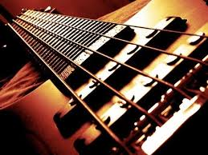
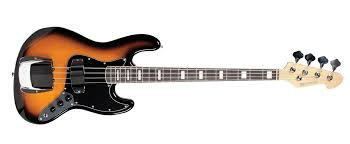

<!-- Header -->
<header>
    <div class="container">
        <div class="row">
            <div class="col-lg-12">
                 <span class="skills">INICIANTE</span> 
                <div class="intro-text">
                     <hr class="star-light">
                    <div class="col-lg-4 col-lg-offset-2">
                          <h3>CONTRA - BAIXO</h3>
                 
                <p>É importante que se tenha em mente que o contrabaixo é um instrumento de acompanhamento, sua principal característica e que não deve nunca ser esquecida.</p>
                  <p>  Deve-se sempre estar imbuído desse “sentimento de acompanhamento” para que o contrabaixo exerça sua função, que é intermediária entre o ritmo e a harmonia, sendo então um instrumento com uma função de equilíbrio dentro da música. </p>
                  <p>A função do contrabaixo “solista” é uma decorrência do tipo de música que se toque, mas para que se atinja a condição de solista, é preciso conhecer a base do instrumento, conhecer sua técnica, para que depois se desenvolvam outras aptidões. </p>
                       <p>Considero que a base do estudo são a técnica e a leitura, pontos fundamentais por onde se adquirirá uma base sólida para posteriormente, naturalmente, se desenvolverem aptidões maiores e, principalmente, um estilo próprio de tocar. </p>
                    </div>
                    <div class="col-lg-4">
                <p> Existe também um dado que considero importante é a parte psicológica do contrabaixo e do contra baixista.Existe uma transferência de funções entre o contrabaixo e o contra baixista e vice-versa.Sendo o contrabaixo um instrumento de equilíbrio dentro da música, esta é uma qualidade que se transfere para o contrabaixista. </p>
                <p>O contrabaixista há que ser uma pessoa equilibrada, assim ele transferirá para sua música esse traço do seu caráter. Da mesma forma, uma pessoa desequilibrada emocionalmente assim tocará um estilo pessoal agradável e seguro.Normalmente, a própria função de equilíbrio desempenhada pelo contrabaixo na música, se transferirá para o contrabaixista, tornando-o mais seguro e equilibrado, e daí para diante se formará um círculo vicioso em que o instrumento ajuda o músico, o músico se torna mais seguro, tornando sua música mais equilibrada, e assim por diante.<p>
                <p>A segurança se adquire primeiro através da educação de sua própria personalidade, depois através do estudo e da prática musical, tocando todo e qualquer tipo de música com o mesmo amor e interesse. Tudo é válido e necessário para o aperfeiçoamento próprio.Outra condição importante para o músico é o lado profissional. É muito importante procurar ser um bom profissional em todos os momentos de sua carreira. Sempre que estiver tocando, dê o máximo e o melhor de si, que só benefícios receberá em troca.
</p>
                 
                    </div>
                   <div class="col-lg-4">
                <p></p>
                    </div>
               </div>
            </div>
        </div>
    </div>
</header>